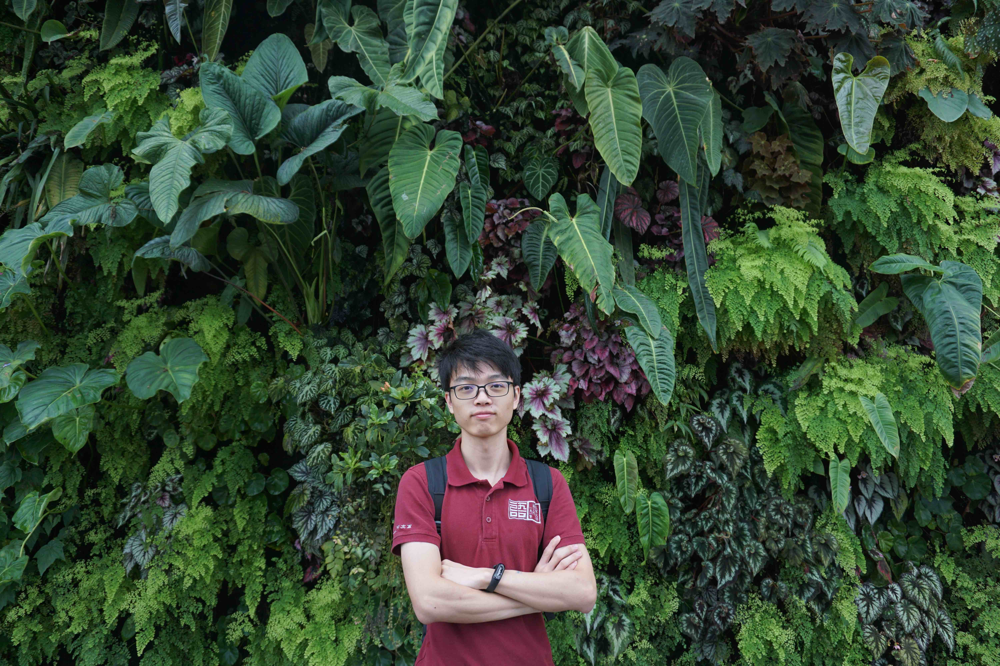

</br></br>
I am a data scientist with focus on computer vision in Shopee. In my work I like to read papers and solve problems using SOTA algorithms. I am recently interested in optimizing inference engine deployment and related engineering topics. Other than that I enjoy playing sports like tennis, badminton and many others (not often though). 

</br></br>
During my bachelor time back to NUS, I played table tennis in the Sheares Hall team, jointly organized several events under Chinese Society, and enjoyed playing with circuits, boards, FPGAs, C, assembly, Fourier transforms, EM waves, Python etc. In my last year, I have been so fortunate to be advised by <a href="https://sites.google.com/site/jshfeng/" target="_blank">Dr. Jiashi Feng</a> for my final year project (thesis) on instance segmentation. 

</br></br>
Keep learning, keep trying good and interesting things and stay curious. That is how I plan to do on the way to happiness and goodness.